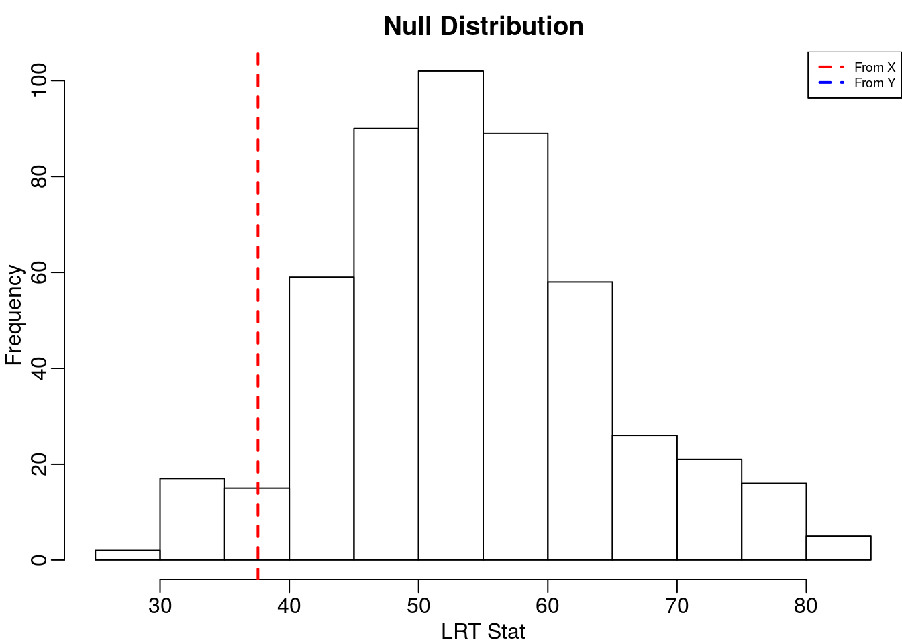

vignettes/maximum_likelihood.Rmd
maximum_likelihood.RmdIn this vignette, I demonstrate how to calculate the MLE and run a likelihood ratio test in the mean-zero array normal model.
First, I simulate some data. X will be generated with
identity covariance along all modes. Y will have identity
covariance along the first three modes, and an AR-1(0.9) covariance
along the fourth mode. Z will have diagonal covariance
along the first two modes, and an AR-1(0.9) covariance along the third
mode.
library(tensr)
p <- c(10, 10, 10, 10)
X <- array(rnorm(prod(p)),dim = p)
cov_Y <- start_ident(p)
cov_Y[[4]] <- 0.9^abs(outer(1:p[4],1:p[4],"-"))
cov_Y[[4]] <- cov_Y[[4]] / det(cov_Y[[4]])^(1/p[4]) #scale to have unit determinant.
Y <- atrans(array(rnorm(prod(p)),dim = p), lapply(cov_Y, mhalf))
cov_Z <- start_ident(p)
diag(cov_Z[[1]]) <- 1:p[1] / prod(1:p[1])^(1/p[1])
diag(cov_Z[[2]]) <- p[2]:1 / prod(1:p[2])^(1/p[2])
cov_Z[[3]] <- 0.9^abs(outer(1:p[3],1:p[3],"-"))
cov_Z[[3]] <- cov_Z[[3]] / det(cov_Z[[3]])^(1/p[3])
Z <- atrans(array(rnorm(prod(p)),dim = p), lapply(cov_Z, mhalf))The holq is used to calculate the maximum likelihood
estimates. Assuming we know the covariance structure of each mode, we
set the the appropriate modes to have identity or diagonal covariance
matrices by using the mode_rep or mode_diag
options.
holq_X <- holq(X,mode_rep = 1:4, print_diff = FALSE)
holq_Y <- holq(Y,mode_rep = 1:3, print_diff = FALSE)
holq_Z <- holq(Z,mode_rep = 4, mode_diag = c(1,2), print_diff = FALSE)
mle_X <- mle_from_holq(holq_X)
mle_Y <- mle_from_holq(holq_Y)
mle_Z <- mle_from_holq(holq_Z)Estimates of the scale are pretty close to the true value of 1.
cat("Estimates of scale:\n",
"From X:", mle_X$sig_mle,"\n",
"From Y:", mle_Y$sig_mle,"\n",
"From Z:", mle_Z$sig_mle,"\n"
)## Estimates of scale:
## From X: 0.9953388
## From Y: 1.002973
## From Z: 0.9966931And the estimates of the covariances are pretty close to their truth.
For example, when we look at the true and estimated variances of the
first mode covariance in Z, we get
cat(" True:", paste("(", paste(format(diag(cov_Z[[1]]), digits = 2),
collapse = ", "), ")",sep = ""), "\n",
"Estimate:", paste("(", paste(format(diag(mle_Z[[1]][[1]]), digits = 2),
collapse = ", "), ")", sep = ""), "\n")## True: (0.22, 0.44, 0.66, 0.88, 1.10, 1.32, 1.55, 1.77, 1.99, 2.21)
## Estimate: (0.22, 0.42, 0.67, 0.97, 1.13, 1.35, 1.52, 1.89, 1.90, 2.06)Let’s test for all modes having the identity covariance matrix versus
the first three modes having the identity covariance matrix and the
fourth is unconstrained. Of course, in this situation we need not resort
to tensor methods. Using X as our data should only reject
the null 5% of the time. But for Y where the alternative is
true, we should have more power.
First, we’ll calculate the null distribution of the likelihood ratio
test statistic. Then we’ll calculate these test statistics using both
X and Y as our data.
null_distribution <- lrt_null_dist_dim_same(p = p, null_ident = 1:4,
alt_ident = 1:3, itermax = 500)
sig_k <- holq(X,mode_rep = 1:3, print_diff = FALSE)$sig
sig_h <- holq(X,mode_rep = 1:4, print_diff = FALSE)$sig
lrt_stat_val_X <- lrt_stat(sig_null = sig_h,sig_alt = sig_k,p = p)
sig_k <- holq(Y,mode_rep = 1:3, print_diff = FALSE)$sig
sig_h <- holq(Y,mode_rep = 1:4, print_diff = FALSE)$sig
lrt_stat_val_Y <- lrt_stat(sig_null = sig_h,sig_alt = sig_k,p = p)We can calculate p-values.
p_value_x <- mean(null_distribution > lrt_stat_val_X)
p_value_y <- mean(null_distribution > lrt_stat_val_Y)
cat(" p-value using X:", p_value_x,"\n",
"p-value using Y:", p_value_y,"\n")## p-value using X: 0.094
## p-value using Y: 0We can also plot the null distribution along with the observed
statistics. If you can’t see the line for Y, that’s because
the likelihood ratio test statistic is so large.
par(mar = c(2.5, 2.5, 2, 0), mgp = c(1.5, .5, 0))
hist(null_distribution, xlab = "LRT Stat", main = "Null Distribution")
abline(v = lrt_stat_val_X, col = 2, lwd = 2, lty = 2)
abline(v = lrt_stat_val_Y, col = 4, lwd = 2, lty = 2)
legend("topright", c("From X","From Y"), col = c(2,4), lty = 2, lwd = 2, cex = 0.6)
As a second example, we run a likelihood ratio test using
Z, testing for diagional covariance along the first mode,
identity covariance along the second and fourth modes, and unstructured
along the third, against the correct model of diagonal along the first
two modes, identity along the fourth mode, and unstructured along the
third.
null_distribution <- lrt_null_dist_dim_same(p = p,null_ident = c(2,4),
alt_ident = 4, null_diag = 1,
alt_diag = c(1,2), itermax = 500)
sig_k <- holq(Z, mode_rep = 4, mode_diag = c(1,2), print_diff = FALSE)$sig
sig_h <- holq(Z, mode_rep = c(2,4), mode_diag = 1, print_diff = FALSE)$sig
lrt_stat_val_Z <- lrt_stat(sig_null = sig_h, sig_alt = sig_k, p = p)
p_value_z <- mean(null_distribution > lrt_stat_val_Z)
cat("P-value:", p_value_z,"\n")## P-value: 0Gerard, D., & Hoff, P. (2016). A higher-order LQ decomposition for separable covariance models. Linear Algebra and its Applications, 505, 57-84. [Link to LAA] [Link to arXiv]